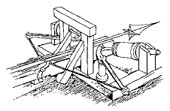
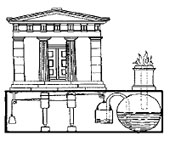
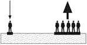
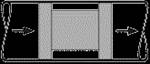
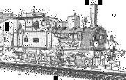
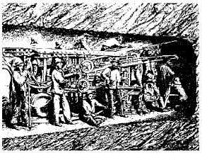
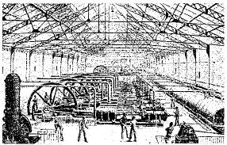

1.1.2. Первые применения
Гидравлический орган
Хранение энергии и редуктор пульсаций
Первым известным целенаправленным использованием энергии сжатого воздуха является работа древнегреческого физика и изобретателя Ктесибиоса (прибл. 285 - 222 гг. до Н.Э.). Одна из работ – это сооружение гидравлического органа. Ктесибиос также использовал сжатый воздух для снижения вибрации.
Катапульта
Хранение энергии

Рис. 1.3. Катапульта Ктесибия
Ктесибиос использовал свойство сжатого воздуха сохранять энергию при создании своей катапульты. С помощью сжатого воздуха, содержащегося в цилиндре, его катапульта была способна метать тяжелые копья на значительные расстояния.
Храмовые двери
Расширение и использование в работе
Рис. 1.4. Двери храма
Герон, живший в Александрии в I веке до н.э., изобрел способ автоматического открывания дверей. Огонь в алтаре, находившемся внутри храма, горел постоянно, а расширение воздуха при нагревании использовалось для вытеснения воды из одного сосуда в другой. Герон, может быть, и не вполне осознавая это, выяснил, что путем изменения состояния воздуха можно выполнять работу.
Закон Паскаля
Увеличение энергии
Рис. 1.5. Увеличение
и передача энергии
В 17 веке, просвещенные люди того времени начали всерьез изучать физические явления, связанные с поведением сжатых сред, в том числе сжатого воздуха. В 1663 году Блейз Паскаль опубликовал работу, основное положение которой теперь известно как Закон Паскаля - основной закон гидростатики, в соответствии с которым жидкости и газы передают производимое на них давление одинаково по всем направлениям.
Транспортировка объектов по трубам
Пневмотранспортировка
Рис. 1.6. Сжатый воздух
для пневмотранспортировки
Начав там, где остановился Герон, в 1667 году французский физик Денис Папин описал метод транспортировки объектов по трубам. Он использовал небольшую разницу давлений в трубе и выяснил, что на объект, помещенный в трубу, воздействует сила. Это стало своего рода первой констатацией факта высокой скорости, обеспечиваемой воздействием сжатого воздуха, и положило начало развитию пневмотранспортировки.
Пневматические тормоза
Передача энергии
Рис. 1.7. Пневматические тормоза
на поезде обр.1870 г.
Уже в 1810 году в поездах использовались пневматические тормозные системы. А в 1869 году инженер Вестингхауз представил свой знаменитый пневматический тормоз. Его тормозной двигатель появился три года спустя. Тормоз работает по принципу избыточного давления т.е., срабатывает при падении давления - в том числе, и в случае обрыва трубопровода, ведущего от компрессора, установленного на локомотиве, ко всем вагонам состава. Это было первым использованием предохранительной системы.
Пневматическая почта
Транспортировка сжатым воздухом
Идея пневмотранспортировки не была забыта. В 1863 году Лэтимер Кларк вместе с инженером Раммелем построил в Лондоне первую систему пневматической почты. В ней использовались небольшие вагонетки, перемещавшиеся полностью внутри трубопроводов, и переносившие посылки и бандероли.
Вскоре системы пневматической почты были созданы в Берлине, Нью Йорке и Париже. Пика своего развития они достигли к 1934 году, когда парижская сеть пневмопочты имела общую длину труб в 437 км. Даже сегодня, пневмопочта используется для быстрой пересылки на больших промышленных объектах.
Пневматический инструмент
Рис. 1.8. Туннель Мон-Сени
Когда в 1857 году строился туннель через гору Мон-Сени, новая технология была использована в пневматическом ударном бурильном станке. С 1861 года в строительстве туннеля использовались и перкуссионные бурильные молоты; сжатый воздух вырабатывался компрессорами, установленными на обеих сторонах туннеля, и передавался на значительные расстояния.
К 1871 году, когда была произведена смычка туннеля, длина трубопроводов составляла более 7000 м. В первый раз, такое преимущество сжатого воздуха, как способность передавать энергию на большие расстояния, стало очевидным для широкой публики. Строительство туннеля через Мон-Сени можно считать началом широкого развития пневматического инструмента.
Централизованное производство
Централизованная компрессорная и передача сигнала
Рис. 1.9. Центральная компрессорная в
Париже в 1888 году
Опыт, приобретенный людьми в построении сетей сжатого воздуха, а также появление более мощных компрессоров, сделали возможным создание централизованной системы производства сжатого воздуха, размещенной в помещениях канализационной системы Парижа. Компрессорная Парижа была запущена в 1888 году с суммарной мощностью компрессоров 1500 кВт. Уже к 1891 году ее мощность была увеличена до 18000 кВт.
Еще одной вехой в развитии компрессорных технологий стало создание часов, минутная стрелка которых перемещалась не плавно, а каждые 60 секунд, по импульсу сжатого воздуха от удаленной компрессорной станции. Теперь людям стало очевидно, что сжатый воздух может не только переносить энергию, но и переносить сигналы, причем быстро и на значительные расстояния.
Уникальная центральная компрессорная станция Парижа существует до сих и продолжает использоваться.
Информационные материалы на данной странице могут перепечатываться в сети Интернет при обязательном размещении обратной ссылки на наш сайт. Размещайте следующий код ссылки: